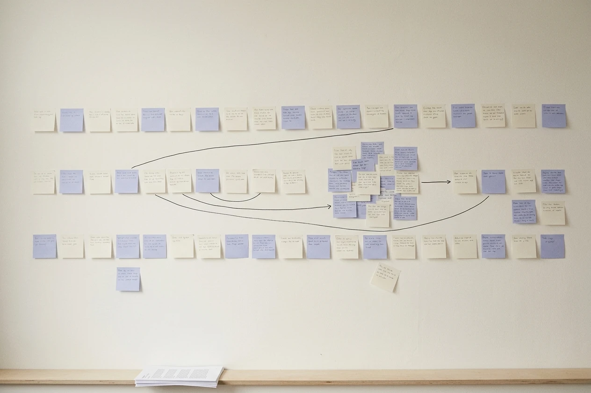
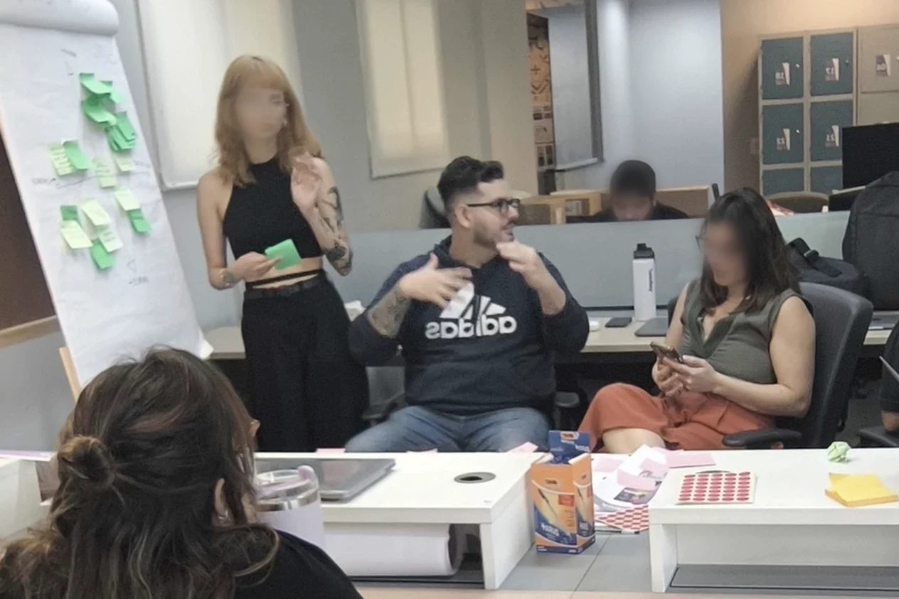
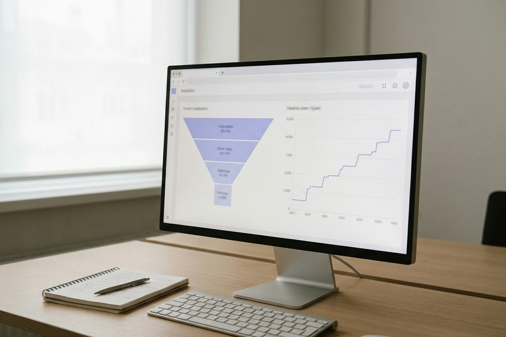
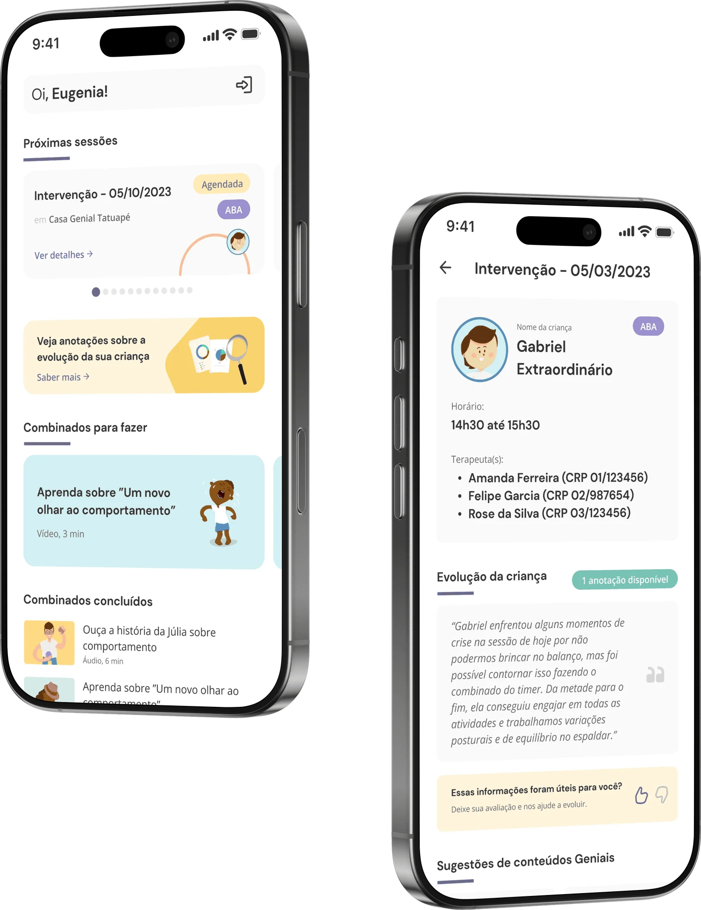
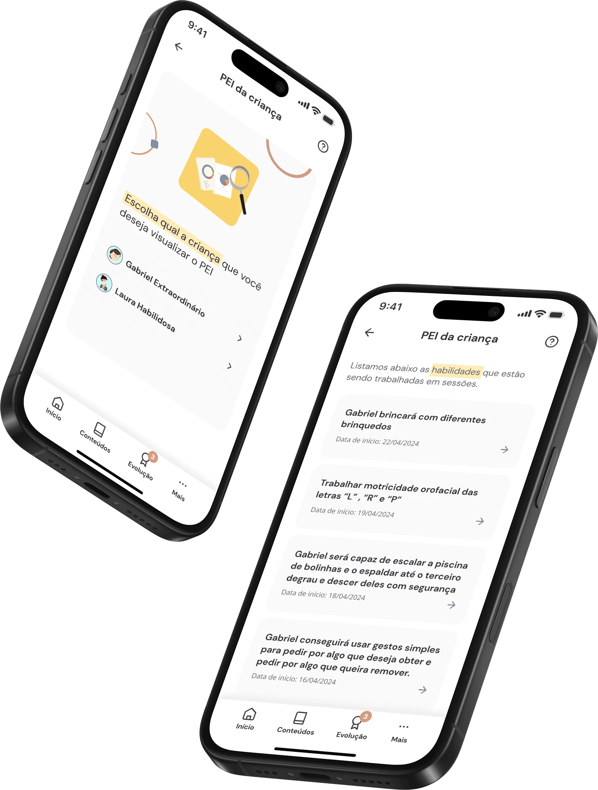
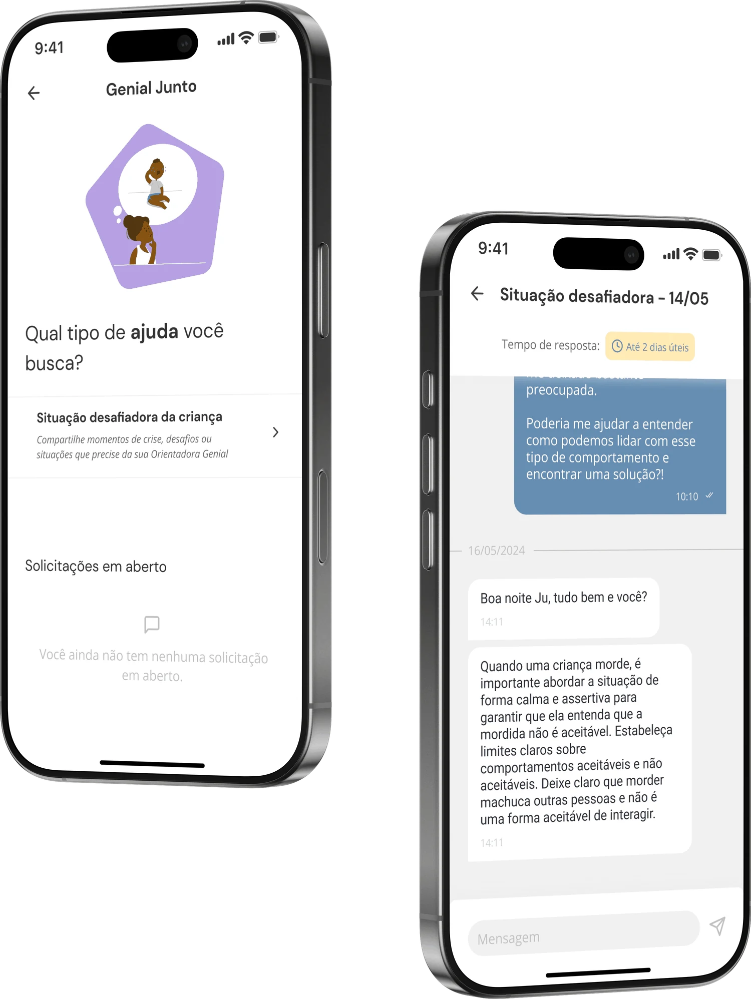
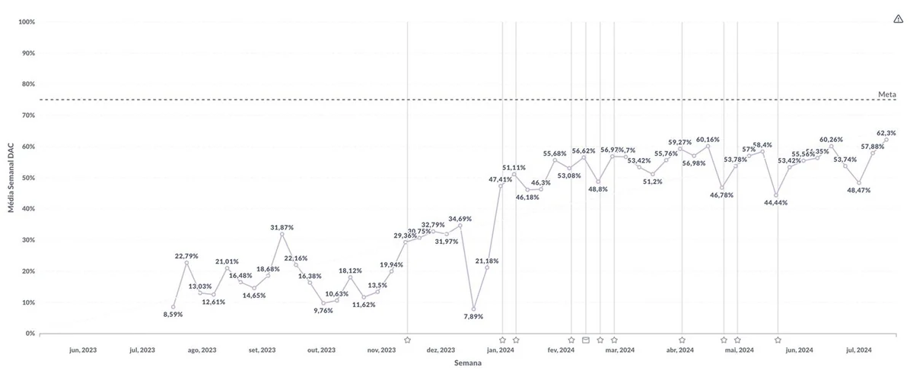

- Problem
- A content app almost nobody opened, on top of an operations team building every family's weekly schedule by hand.
- What I did
- Found the real bottleneck in scheduling, shipped a one-month MVP that let families see and cancel sessions, then ran a continuous loop of small bets read against a weekly behaviour curve.
- Outcome
- Daily active families went from 8.59% to 62.3% over a year, in a staircase that tracks releases rather than one redesign spike.
I joined Genial Care, Brazil's leading platform for autism care, as its first Senior Product Designer, brought in to build the Atípico design system from scratch, improve the family-facing app, and stand up the clinical panel therapists use to run sessions (the same panel LIAM would later live inside). This case is about the app half of that mandate.
When I joined, the app was a one-way channel: articles and content cards to read, with no direct interaction of any kind. You couldn't do anything in it. You could only look at things. About 8% of families opened it on a given day, which is roughly what you'd expect from a digital pamphlet.
01 · The painThe bottleneck wasn't the app. It was scheduling.
Instead of starting from the app, we started by mapping the biggest process gaps across Genial Care as a whole. One stood out immediately: session scheduling. Every family's weekly schedule, dozens of therapists and dozens of time slots, was built by hand by the operations team. The moment anything changed, a reschedule, a cancellation, that manual process broke. Information about who knew what lived across phone calls and spreadsheets, nothing was centralized, and keeping everyone aligned consumed a disproportionate share of the team's time every single week.
That was the actual opportunity: not a content problem, but an operations problem wearing a UX costume.
It wasn't a content problem. It was an operations problem wearing a UX costume.
The pointer we agreed to move, before I drew a screen
Daily engagement was the metric, but a metric is not a reason. The reason was capacity. At a care company the number of families you can serve is capped by how many hours the operations team spends holding the schedule together, and every reschedule absorbed by phone is an hour that doesn’t go to onboarding the next family.
So the agreement with the PM and the operations lead was explicit. We would judge this work by two things: whether a family opened the app on an ordinary day, and whether operations stopped being the switchboard for schedule changes. Two pointers, one mechanism. An idea that couldn’t plausibly move either one didn’t get built, however good it looked.
A metric is not a reason. The reason was capacity: hours the operations team never got back.
03 · The questionsThe questions I had to answer before design was useful
Before any wireframe I ran a round with the people who owned the pieces: PM, operations lead, clinical lead, engineering. Not a workshop with sticky notes: a list of questions I could not answer myself, answered on the record, because each answer changed what was designable at all.
-
Who actually owns the schedule?
If a family cancels in the app, whose calendar is the source of truth, and what happens to the therapist’s slot? That answer decided whether cancelling could be one tap or needed a confirmation loop.
-
What is a family allowed to see?
Clinical documentation has rules. I needed the clinical lead to draw the line between a family’s information and a professional’s working note before I designed anything that displayed either.
-
What can we change without touching scheduling?
Engineering told me which parts of the backend were safe to build on in a month and which weren’t. That is what made a one-month MVP a plan instead of an ambition.
-
What breaks if this works?
If cancelling gets easier, does cancelling get more frequent? Operations took that risk deliberately, and we agreed up front on what number would mean we had made things worse. Naming the failure condition before launch is what let us read the result honestly afterwards.
Naming the failure condition before launch is what let us read the result honestly afterwards.

What a family was actually hiring the app for
The app was full of good material about autism care and almost nobody opened it. That is not a content-quality problem, it is a job problem. Nobody wakes up wanting to read about autism. What a parent wants on a Tuesday morning is to know what happens with their child this week, and to be able to change it without making a phone call.
Operations had a job too, and it was the same one seen from the other end: stop being the person who has to know everything and tell everyone.
Nobody opens an app to read about autism. They open it to find out what happens with their child on Thursday.
05 · The betContinuous discovery, not a big-bang redesign
I didn’t run this as a single project with a launch date. I ran it as a loop: talk to people, ship the smallest useful thing, watch what they actually do, decide the next bet from that. That is the reason the app kept climbing instead of spiking once and flattening.
The loop was not only mine. Product designers and marketing sat in the same room on a recurring basis, in person, to find where the ecosystem was getting stuck — not just the app, but how product and brand were failing to say the same thing. Some of the best bets came out of those sessions rather than out of a research round: the person who owns the brand voice notices a gap that someone looking at a funnel never will.

How I checked, and why I didn’t A/B test this
Every feature started as a clickable prototype run past a handful of real families, which is where you catch the confusing parts of a flow before engineering spends a sprint on them. But a prototype tells you whether someone can use something. It doesn’t tell you whether they will.
The textbook answer would be to split traffic and A/B test each release. I didn’t, and the reason is the math. Genial Care served families in the hundreds, not the millions. An experiment on a daily-open rate at that base needs weeks to say anything, and splitting the base in half doubles the wait. We would have bought statistical comfort at the price of learning speed, on a product whose whole advantage was learning fast.
So the instrument was the weekly curve with the funnel underneath it: who came in, what they opened, where they stopped, what they never touched once. Each release became its own before-and-after, marked on the chart. The funnel said what changed; the interviews said why. When the two disagreed, the disagreement was the finding worth chasing.
The funnel said what changed. The interviews said why. The disagreement between them was the finding.
The round that changed the cancellation flow
Before build, I ran the flow with five families on their own phones, remote, each asked to do one thing: find out when their child’s next session is, then cancel it. No script beyond that, because the point was to watch where they hesitated, not to confirm that the buttons worked.
That cancelling would be the sensitive moment, so the design effort belonged in making the confirmation feel safe.
The hesitation came earlier. Parents weren’t sure the schedule in front of them was live. Two of them refreshed before touching anything. Cancelling itself they did without pausing.
So the confirmation stayed, but the work moved to the state before it: making the schedule read as current rather than as a stored copy. The same round killed a label. “Agenda” meant the clinic’s calendar to the operations team and the child’s week to a parent, and the parents’ reading won.

My role
Senior product designer end to end: discovery, research, interaction and UI, prototype, and working alongside engineering through launch, across iOS, Android, and web.
The team
Worked directly with a product manager, the operations lead, and a small engineering squad, plus the clinical team as domain experts on what families needed to see.
The opening move: let families act, not just read
We scoped an MVP around the two actions responsible for most of the manual back-and-forth: showing each child's upcoming sessions inside the app, and letting families cancel a session themselves instead of routing it through a phone call. Discovery, prototype, and build: one month, start to finish, deliberately small so we'd get a real answer fast instead of a better guess slowly.
It launched, and the result wasn't ambiguous. Families used it immediately, cancellations started coming through the app instead of the phone, and operations felt the relief right away: the manual, repetitive core of their week had a real alternative.
That first release proved something bigger than the feature itself: give families a reason to act, not just read, and they'll show up. From there, we kept adding to it, each new feature earning its place by giving someone another reason to open the app, and each one pulling another manual task off operations so the team could focus on higher-value work instead of rebuilding the same schedule by hand every week.

Then: make the long-term visible, not just the next appointment
Sessions answer "what happened this week." They don't answer the question underneath every parent's week, which is "is my child actually progressing?" The PEI, the individualized education plan, already existed as a clinical document, but it lived where families couldn't see it. I brought it into the app as a plain-language list of the skills being worked on, each with a start date: Gabriel will play with different toys. Gabriel will be able to climb the ball pit.
This is a different kind of move than the scheduling MVP: not a new capability, but taking something the clinical side already produces and putting it where the family can see their child inside it.

And then: the moment between sessions
The hardest moments for these families don't happen during a session. They happen at 8pm on a Tuesday when a child bites someone and a parent has no idea what to do. Genial Junto opened a direct line to a Genial advisor for exactly that: describe the difficult situation, get a real, specific answer back within a stated response window.
Design-wise, the decision I care about here is the visible response-time badge. An open-ended "we'll get back to you" invites people to check obsessively and then lose trust. Stating "up to 2 business days" up front sets the expectation once, honestly, and lets the parent put the phone down.

The curve is the argument
08 · The buildWhat changed between handoff and production
I didn’t hand off a file and leave. The MVP was one month end to end, and I sat in the same squad rituals as engineering through it. That is where the questions a Figma file can’t answer got decided. What happens if a family cancels a session that starts in twenty minutes. What the screen shows when the schedule hasn’t synced yet. What an empty week looks like for a family that joined yesterday.
The cancellation window is the one I’d call out. It only surfaced during build, because the rule lived in the scheduling backend and nobody had written it down. Rather than hide it, we surfaced it: past the cutoff the action stays visible but explains itself, instead of disappearing and leaving a parent to guess whether the app is broken. I ran design QA on the real build across iOS, Android and web before release, because a state that is correct in Figma and wrong in the client is still wrong.
A state that is correct in Figma and wrong in the client is still wrong.
09 · Into productionNone of the above launched as one release. Each was a small bet against the same bar (does this give someone a reason to come back?), shipped narrow, then measured before the next one started. The weekly active-user chart below is the honest version of that story, release markers and all: it isn't a hockey stick, it's a staircase with visible dips, where each step up follows a release and each dip taught us something before the next one.
It isn't one redesign that worked. It's a staircase, each step a bet that had to prove itself before the next one started.

How it was measured: daily active users tracked in the product analytics platform as a weekly average of unique families opening the app, from the first release baseline through peak. The chart above is the raw weekly series over that period.
What I'd defend in a design review
The decision I would defend hardest is scoping the MVP around actions, not features. Showing a schedule and enabling cancellation are unglamorous compared to a full engagement suite, but they were the two things actually driving operations' manual workload, so they were the two things worth building first, in a month, to get a real answer instead of a better guess.
The second is what happened after the MVP proved itself: the PEI and Genial Junto additions were a different kind of move, not fixing an operational bottleneck, but surfacing clinical value Genial Care already produced and simply wasn't showing families. Knowing which of those two levers to pull, and when, is most of what this case is actually about.
How we measured it, and what would have counted as failure
The scoreboard was agreed before the first release, so nobody could move the goalposts afterwards.
- North star Weekly average of unique families opening the app, tracked in the product analytics platform. The chart above is that raw series, release markers included.
- Guardrail Cancellation rate. If making cancellation easy made cancelling more frequent, the product win would have been an operational loss. We agreed on that before launch, not after.
- Read cadence Weekly, with each release marked on the curve, so a step could be attributed to a specific bet instead of to the month it happened in.
The argument I had to win
The redesign was the obvious ask, and it was the argument I had to win against. Spending the first weeks mapping how the operations team’s week actually went, instead of drawing screens, is a hard thing to defend in week one when nothing visible is being produced. What made it land was not a better opinion, it was the map: once you could see how many hours a single reschedule cost, nobody wanted to talk about the content grid any more.
What I’d do differently
I would instrument before shipping, not alongside it. The releases after the MVP each had a clean before-and-after because the events were already in place; the first one did not, and it is the one people ask about most. I also spent longer than I should have making the content section work before accepting that content was not the problem — the evidence for that was available weeks earlier than I acted on it.
The instrument was chosen, not inherited
None of this is a method I apply everywhere. Inside the same company, on LIAM, the population was countable and the risk was clinical trust. A funnel there would have been noise, and the evidence had to come from watching people work and reading drafts with them. Different instrument, same standard.
What carries across projects isn’t the technique. It’s the rule that a decision doesn’t reach production until something outside my own taste has argued for it, and that I pick the cheapest instrument that can still change my mind.
A decision doesn’t reach production until something outside my own taste has argued for it.
What came next
Once families were opening the app daily, the constraint moved to the other side of the platform: the therapists. Their bottleneck was documentation: up to two hours after every session, reconstructing what happened from memory for mandatory clinical reports. That became the next project, LIAM.
LIAM: AI clinical documentation
An assistant that lets therapists narrate a session out loud as it happens, then drafts the required report fields for review. Session documentation went from ~2 hours to ~25 minutes.
Read the case →The through-line
Both projects are the same instinct: find the moment where a person is spending effort on something that isn't the actual work, and compress it into a decision they can make quickly.